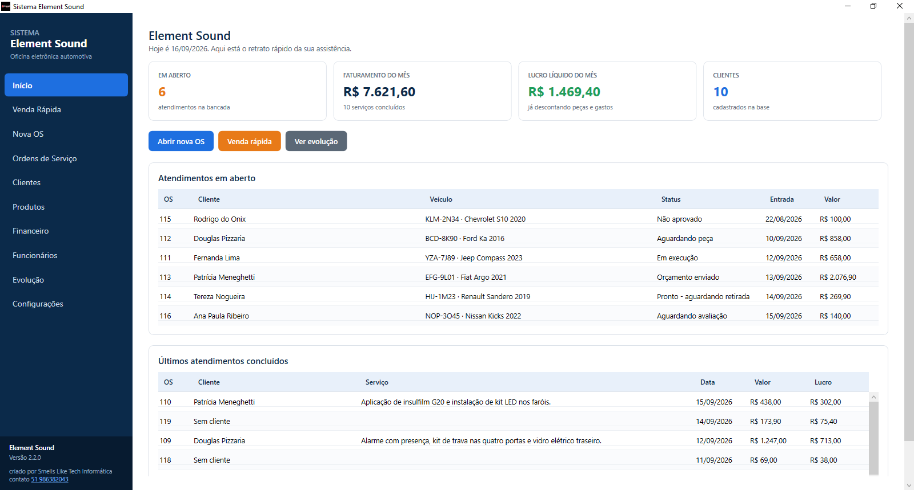
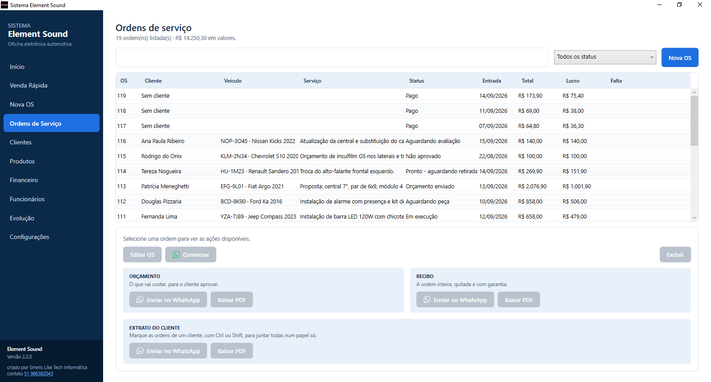
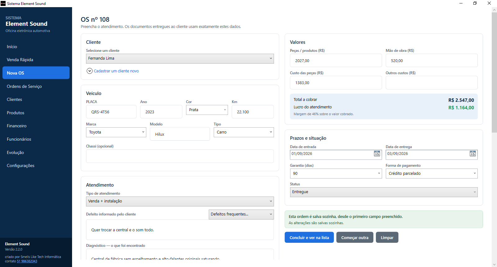
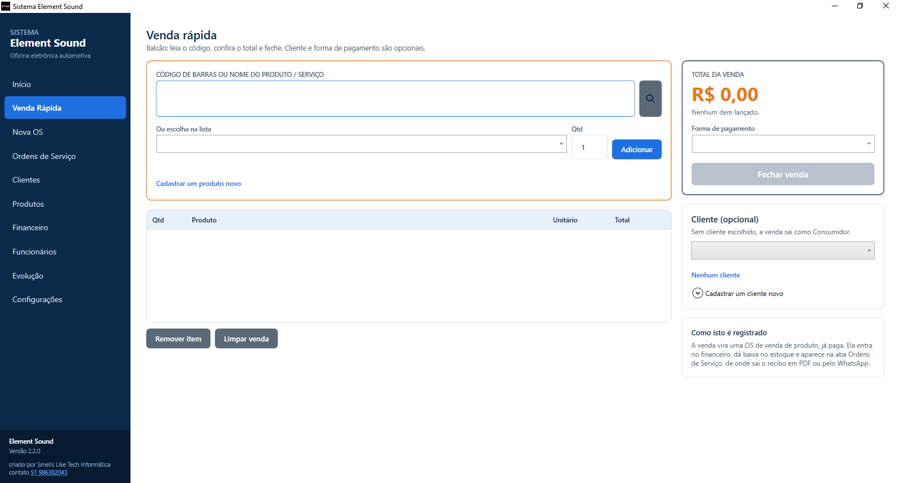
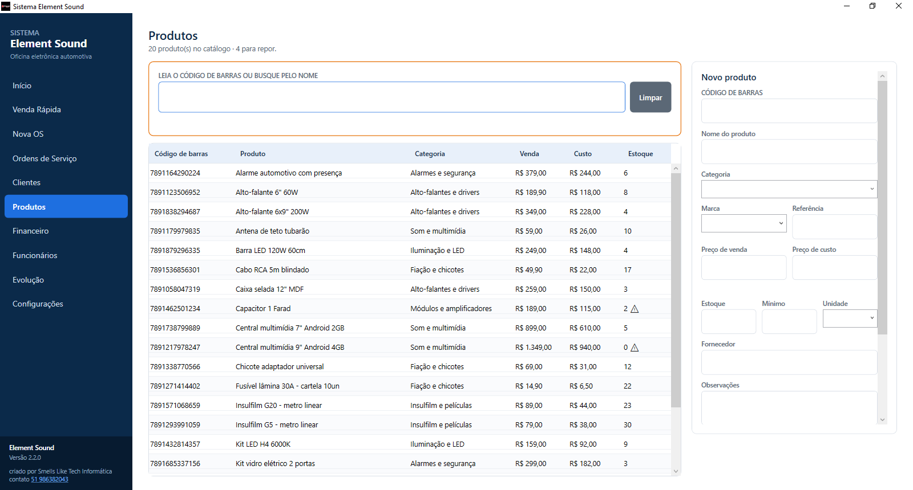
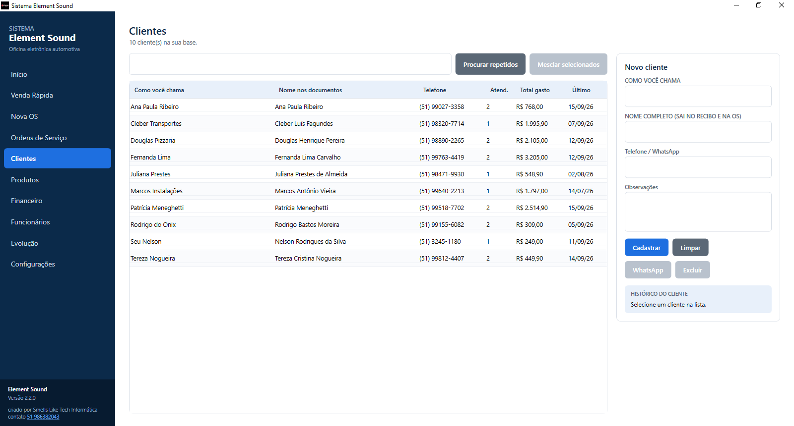
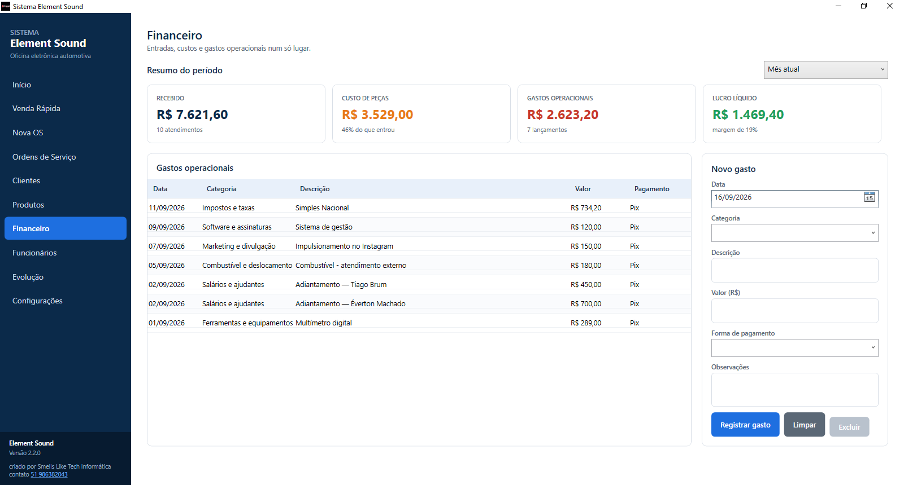
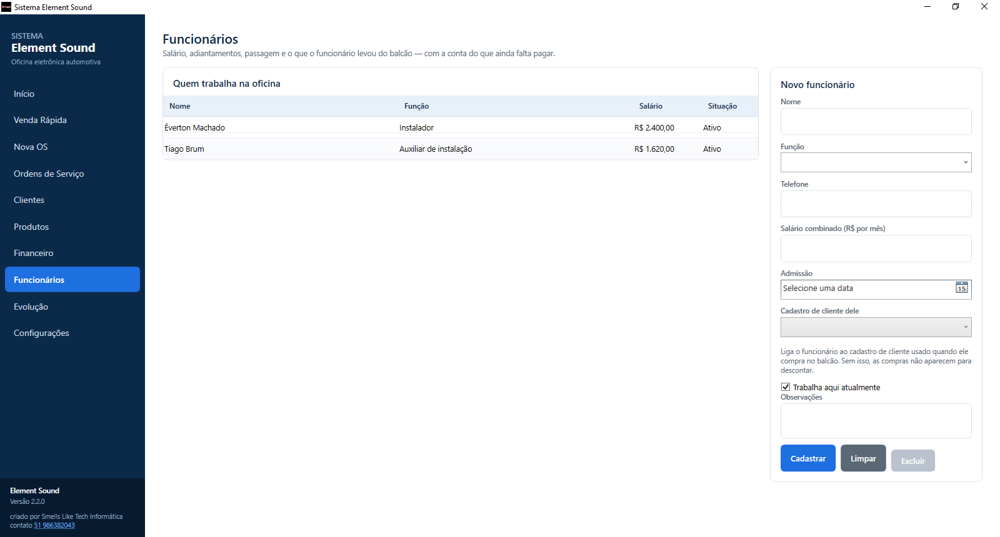
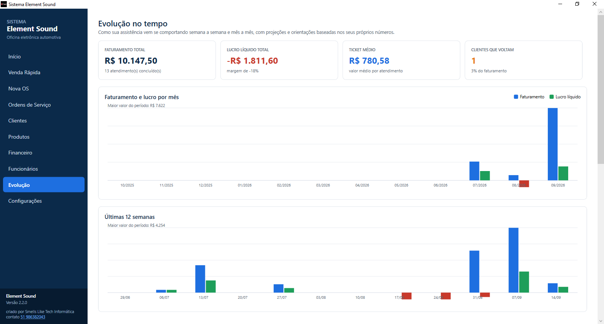

Software para oficina · Windows
A oficina de som, alarme, insulfilm e elétrica automotiva inteira num programa só: da placa que entra na bancada ao recibo que sai pelo WhatsApp.
Desenvolvido pela Smells Like Tech Informática · Porto Alegre

O que ele resolve
Cada decisão do programa saiu de um problema real do balcão: o cliente que liga dizendo a placa, o técnico que se distrai no meio da ordem, o balconista que vende sem cadastrar a peça.
O carro é reconhecido pela placa, que é como o cliente se identifica no telefone. Marca, modelo, ano, cor, quilometragem e chassi acompanham o atendimento e saem nos documentos.
Três documentos, cada um respondendo a uma pergunta diferente — e os três cabem em uma folha. Saem em PDF ou vão direto para a conversa do WhatsApp.
Aponta o leitor de código de barras para a caixa e o item entra na venda, com preço e custo do momento. Código desconhecido abre o cadastro rápido sem abandonar a ordem.
A peça sai quando o atendimento é concluído e volta se ele for reaberto, alterado ou excluído. O sistema lembra o que já baixou, então nada é descontado duas vezes.
Entradas, custos e gastos no mesmo lugar, com o lucro do mês já descontando peças e despesas. E o desempenho mês a mês, para ver se a oficina está crescendo.
O balcão e a bancada veem as mesmas ordens. Funciona sem internet, e o que foi feito offline sobe quando a conexão volta.
As telas
Ordens de serviço
Busca por placa, cliente, veículo, número ou serviço. A coluna Falta mostra o que está pendente em cada atendimento — cliente, placa, descrição ou valor — para nenhuma ordem pela metade se esconder entre as prontas.
Marcando várias do mesmo cliente com Ctrl, sai o extrato de todas num papel só.

Nova OS
Tudo o que é digitado é salvo um segundo depois — e também ao trocar de aba e ao fechar o programa. Nenhum campo é obrigatório: basta um preenchido e a ordem existe, com número.
O que foi encontrado e o que foi feito são campos separados, porque são duas coisas diferentes, e o recibo mostra os dois.

Venda rápida
Vender um fusível, um par de alto-falantes ou um controle de alarme não exige carro na bancada nem defeito relatado. Leitor, lista de itens, total e um botão.
Por dentro a venda vira um atendimento já pago, então cai sozinha no financeiro, baixa o estoque e pode emitir recibo.

Produtos
O campo de leitura recebe o foco ao abrir a tela e o código filtra a lista na hora. Código repetido é recusado, porque dois itens com o mesmo número tornariam a leitura ambígua justamente quando ela precisa ser instantânea.
Uma faixa avisa quantos produtos ficaram sem preço de custo — sem isso, o lucro do mês sairia inflado em silêncio.

Clientes
Quantos atendimentos, quanto gastou, quando foi a última vez. Cadastros repetidos do mesmo cliente — "Tereza PC" e "Tereza Nogueira" — se unem sem perder nenhuma ordem: o histórico inteiro passa para o cadastro escolhido.
Dois cliques no nome abrem todos os atendimentos dele, de onde sai o extrato numa folha só.

Financeiro
Gastos operacionais por categoria, indicadores do período e o lucro já descontando peças e despesas. O custo da oficina nunca aparece nos papéis entregues ao cliente — é informação de gestão, e fica aqui.

Funcionários
Salário combinado, adiantamentos já pagos, passagem, e o que o funcionário levou do balcão para descontar. A conta aparece linha a linha, não só o total — quem paga precisa ver por que o líquido deu aquilo.
Cada lançamento cai sozinho no financeiro como gasto da oficina.

Evolução
Faturamento, lucro e número de atendimentos mês a mês. É a tela que responde a pergunta que não cabe em nenhuma outra — se o movimento deste mês foi melhor que o do anterior, ou se só pareceu.

Como ele foi feito
Um sistema de oficina não erra alto: erra em silêncio, num número que não fecha no fim do mês. Estas são algumas escolhas tomadas para que isso não aconteça.
Guardada só com letras e dígitos, em maiúsculas: abc1d23, ABC-1D23 e abc 1d23 são o mesmo carro. A busca aceita as três formas; os documentos imprimem a formatada.
O sistema não desconta por evento — ele guarda, por atendimento, o que já tirou da prateleira, compara com o que deveria ter tirado e move só a diferença. É o que faz sincronizar dez vezes seguidas não contar a mesma venda dez vezes.
Valores são guardados como texto decimal, e não como número de ponto flutuante. R$ 0,10 em float volta 0,1000000000000000055 — um centavo de erro por linha, que só aparece somado no fechamento do mês.
Uma exclusão vira registro e viaja entre os computadores como qualquer alteração. Sem isso, o que foi apagado num aparelho voltaria do outro como novidade na sincronização seguinte.
E não preso em zero, de propósito: o número negativo é o que faz alguém ir conferir a prateleira. Prender em zero esconderia a divergência.
Cada computador reserva uma faixa de números antes de precisar dela, o que permite abrir atendimento offline nos dois sem os dois emitirem a mesma OS. Se ainda assim coincidirem, quem criou depois é renumerado — a ordem mais antiga tem mais chance de já ter virado papel na mão do cliente.
Por dentro
Aplicativo de desktop nativo, sem navegador embutido e sem runtime para o cliente instalar.
Software proprietário. O código-fonte não é público e não é distribuído. Esta página existe para apresentar o produto; o programa é licenciado e entregue instalado ao cliente, com suporte.
Fale comigo
Atendo oficinas de som, alarme, insulfilm, iluminação e elétrica automotiva. O sistema é instalado, configurado com os dados da sua oficina e entregue funcionando.
Chamar no WhatsApp